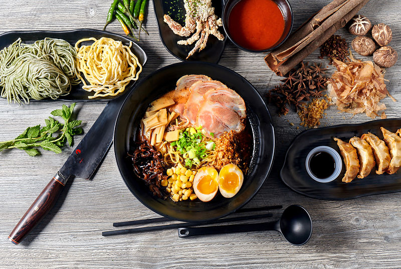
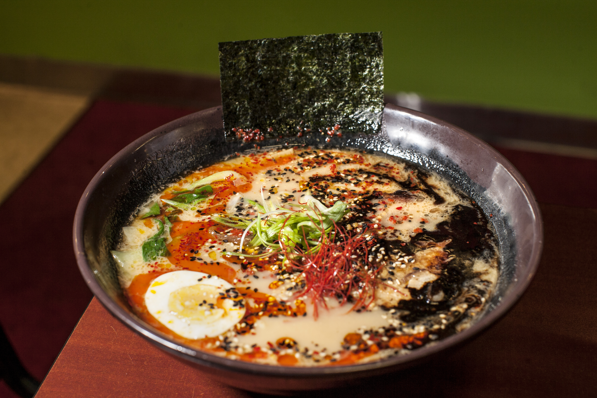
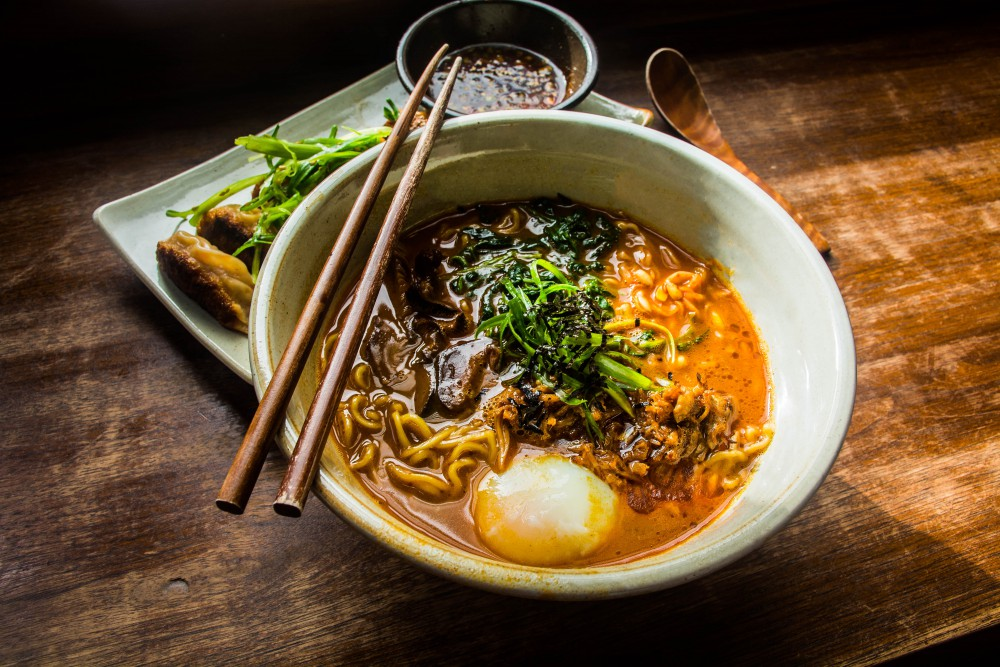
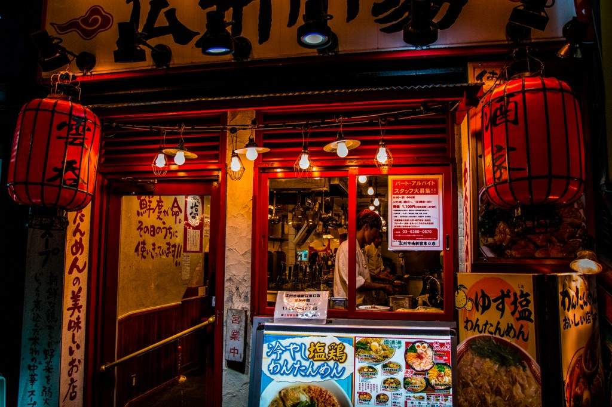
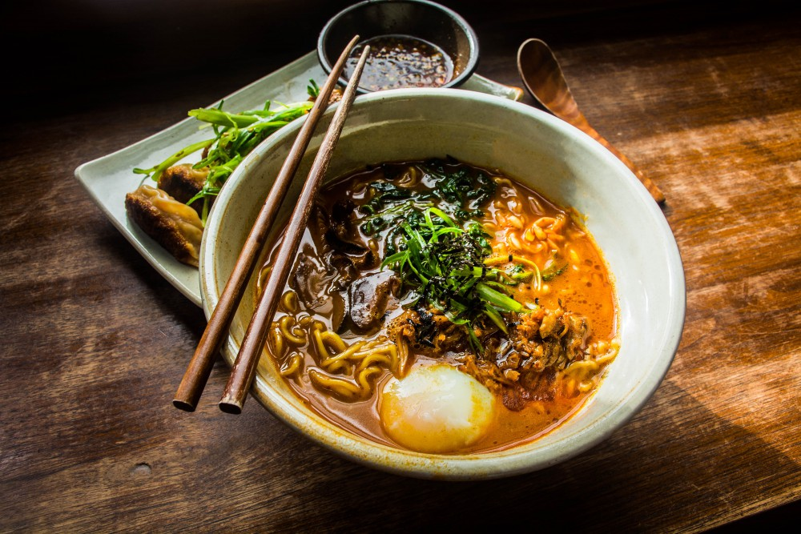
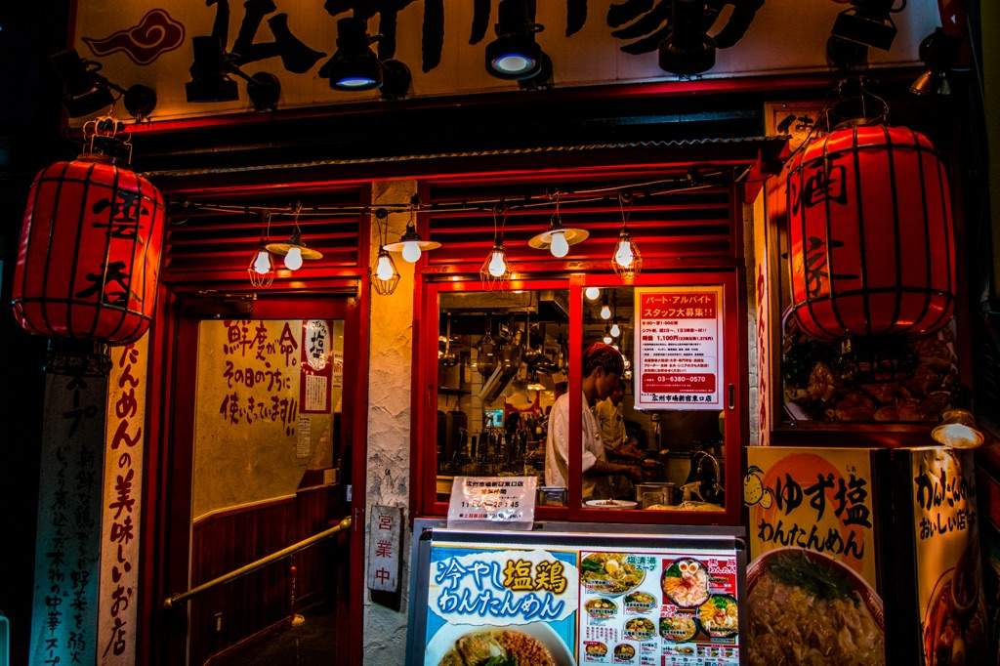
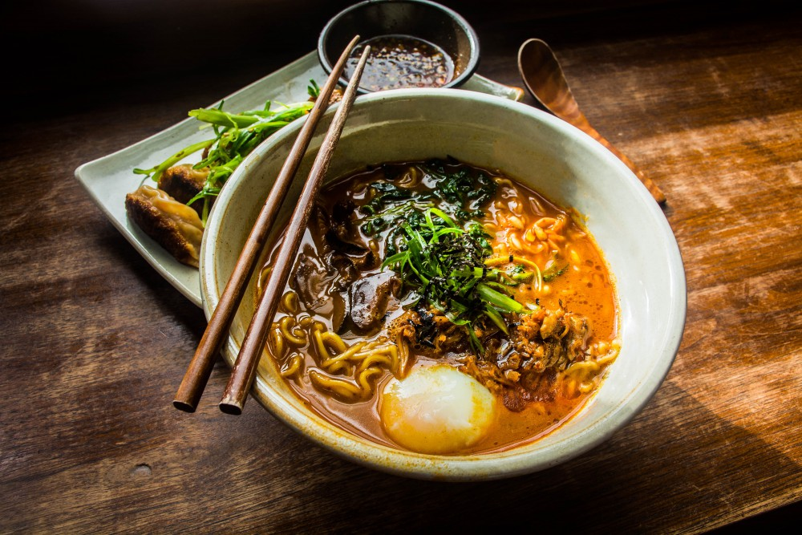
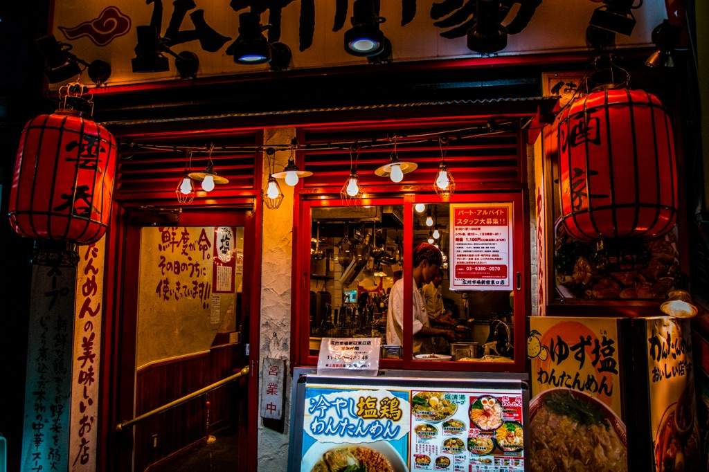

Ramen"When you get to eat ramen after feeling really, really hungry,—that's happiness."

Welcome



To begin with, the origin of the first ramen is unknown, but a fact is that ramen came from an immigrant dish borrowed from China. Myths and mystery cloud the origin of the ramen and its boom. Academic historian and author George Solt presents three origin myths about ramen in his book The Untold History of Ramen: How Political Crisis in Japan Spawned a Global Food Craze. The first myth establishes Shu Shunsui, a scholar from China, as the one who brought the ramen recipe to Japan. Shu Shunsui was a Chinese refugee of the Ming government who came to serve as an advisor to the Japanese feudal lord Tokugawa Mitsukuni. Historical records state that Shu Shunsui adviced Mitsukini on what to add to his udon soup to make it taste better. This dish is rumored to be the first ramen ever made and established Tokugawa Mitsukini as the first person to eat ramen in Japan. While it is true that Chinese culture heavily influenced Japanese culture at the time, a historical record of Mitsukini cooking ramen does not exist.
 


